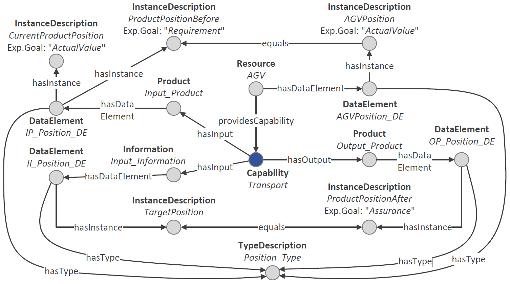

We define capability engineering as the process of creating a capability description for a functionality. This functionality can either be required for a certain task or provided by a machine. The CaSkade approach makes use of an ontological model to define capabilities, their properties and constraints. Creating this model manually is very complex and requires ontology expertise - both in general as well as detailed understanding of our ontologies.
This is easily shown using an example. In the following image, you can see a transport capability, which is provided by an AGV. The capability is used to transport an (input) product from a current position to a target position. The product's current position is modeled using a data element attached to the input product (CurrentProductPosition). The target position is given as an input information, more precisely: As a data element attached to an input information. The output product features the updated position - also as a data element (ProductPositionAfter). The capabilit contains two constraints: First, the AGV's position must be equal to the product's position to start transporting. And second, if tranposrt is carried out, the output product's position is assured to be equal to the input information, i.e., the selected target position. 
Quite complicated, huh? We know, that's why we provide two solutions to automate the creation of capability ontologies:
Imagine you could specify capabilities using natural language. For example, take this example of a simple division capability:
"Division" is a capability for a conventional, mathematical division operation. It takes a "dividend" and "divisor" as an input and returns the "quotient". In this case, dividend and divisor are defined to be integers. The quotient is a real number. For the divisor, there is a requirement: It must not be equal to zero.
Using Large Language Models (LLMs), we can transfer this natural language description into our capability ontology. This also works for way more complex capabilities representing real manufacturing functions such as assembly or distilling. We created a method that uses established prompting techniques with backprompting as well as automated model checks to achieve robust resulst. This method is integrated into CaSkade MES. If you want to read more about the details of this method, have a look at the corresponding publication.
In case you need more control over your capability model and want to explicitly model sub capabilities, properties or constraints, there is also a second albeit more involved method to model capabilities. The easy-to-use graphical modeling tool fpb.js can be used to model all kinds of processes according to VDI 3682. As VDI 33682 forms the foundation of our capability model, processes modeled with fpb.js can automatically transferred into our ontological model using a direct mapping approach, which is also integrated into CaSkade MES.